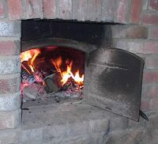

Èrchette
En fouôngnant aut'fais (lé pain dans l'grand fou) nou faisait l'pus souvent tchiques gâches à fouée, qué nou mangeait au thée toutes caudes.
Nou prannait d'la pâte et nou les faisait comme des p'tits pains, gros comme lé poing un co tchuits, ou même pus gros. Pouor les tchuithe nou les m'ttait chînq minnutes ou pus à la dgeule tandi qu' lé fou 'tait à r'penti, d'vant enfouônner. Nou les mangeait beurrées toutes caudes, ieune châque, l's ayant gardées env'loppées dans un lînge jusqu'au r'pas. I' 'taient pûtôt souôl'vées, et sans doute bein appétissantes.
Viyiz étout: